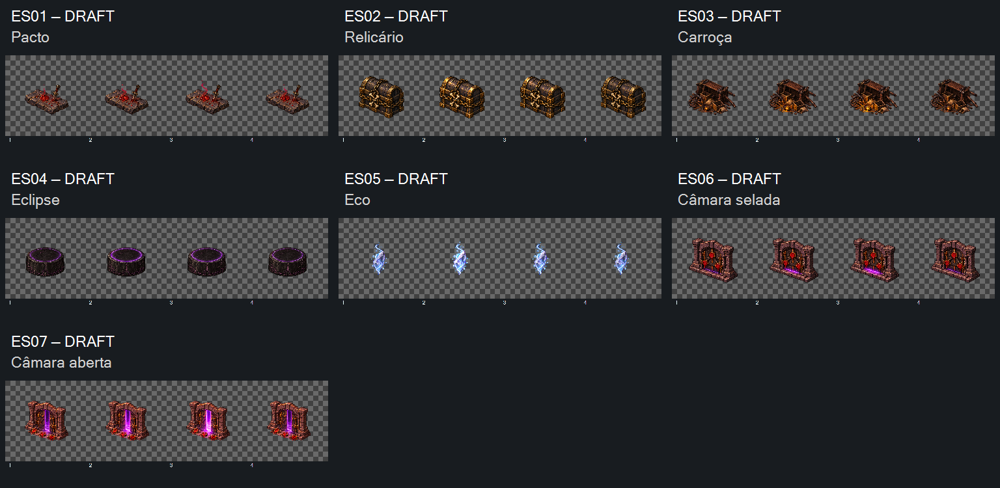

DRAFT — direção visual aceita em2026-10-16. Sete fontes selecionadas em13tentativas: ES01/ES05v02, ES04/ES07v03, demaisv01. Preparação e implementação com Claude.
Revisar identidade, rigidez dos objetos e sutileza da luz/filamento no retorno4→1. Câmara selada mantém três selos; câmara aberta é outro ciclo independente, sem transição de abertura. Nenhuma nova regra de jogo.
Todos os nativos2048×768, quatro células512×768. Prévias mantêm posição/proporção originais. Zero contato alfa≥16 nas bandas4px; vários motivos não atingiram margem-alvo64px. Alfa e registro final pendentes. ES01 ainda tem13px de variação horizontal do centro da bbox do núcleo; medida é proxy geométrico, não pivô semântico certificado.
Entrega para Claude · Manifesto · Medidas · Prompts · Referências · Controles offline · Integridade

Controles verificados por simulação DOM offline, sem render de navegador. Nenhuma admissão, implementação, promoção CANON ou playtest.
Recibo de aceite visual. Preparação pendente.